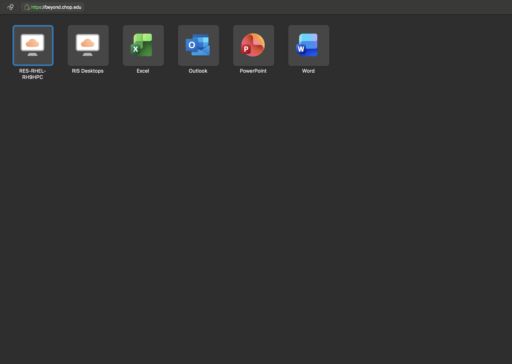
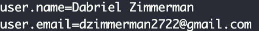
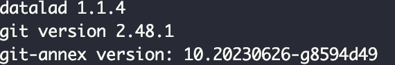
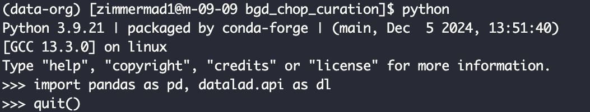
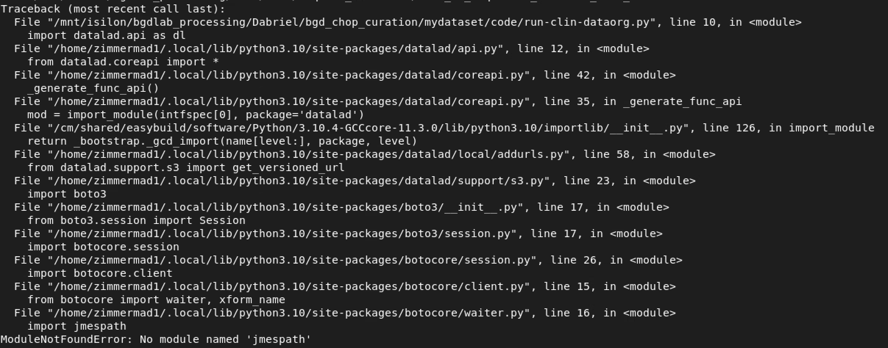
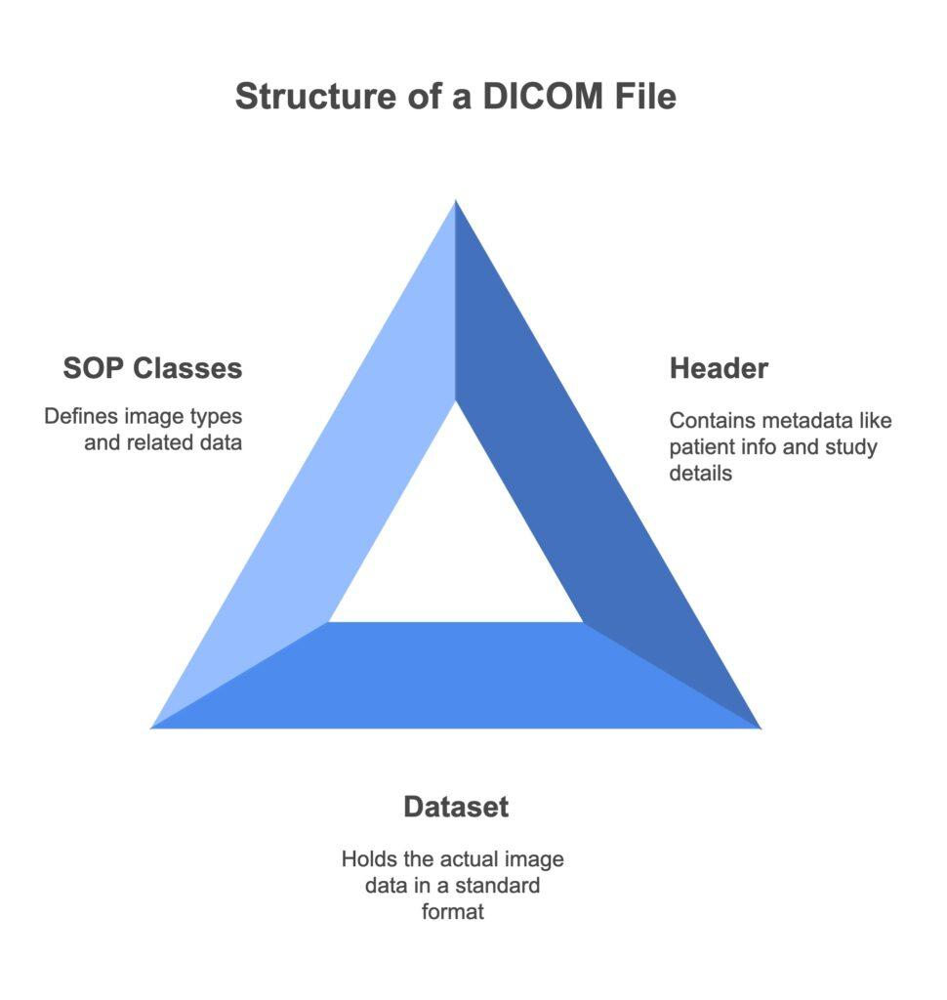

BGDLab Data Curation
2026-04-19
Chapter 1 Introduction
This walkthrough will help you understand the data curation process as well as the underlying infrastructure.
First a brief overview of Respublica.
1.1 Using Respublica
1.1.1 How to Access
Respublica is the CHOP high performance cluster (HPC) where the lab stores all the raw and processed imaging data and associated statistical models, code, and analytical output. A thorough overview of using the Respublica can be found on the internal CHOP wiki.
You can access Respublica on a CHOP device after activating the VPN. If it is the first time you’ve logged into Respublica, you will need to download Omnissa, the app to connect you to Respublica (this will only work on CHOP devices while on the VPN). To download Omnissa, go to Beyond and download the client.
When you open the app, you’ll login using your CHOP password. You will be brought to a homescreen where you’ll open the RES-RHEL-RH9HPC server which will take you into Respublica! From there you can open a terminal which is where you will be curating data.

🔑 Note
Since this is a virtual machine (VM), regular Copy/Paste shortcuts won’t work. On a MacBook, you will need to use shift+control+C to copy and shift+control+V to Copy/Paste in Respublica. You won’t be able to copy from the terminal on the VM to your local machine.
If on a non-CHOP device, you can access Respublica 2 ways:
1) through Respublica On Demand or
2) through the browser on Beyond
When on the browser, you won’t be able to Copy/Paste things into the terminal at all. You also won’t be able to copy or move files from Respublica to your local machine. Your best bet is probably to use Respublica on Demand and open an interactive VSCode session where you will be able to Copy/Paste between virtual and local machines. Then you can use the Files tab to download/upload between virtual and local machines.
🔑 Note
We don’t have admin privilages on Respublica so things like Docker and sudo commands will not work.
1.2 Environment Creation
To be able to curate a dataset, you will need to setup a virtual environment that will contain packages needed to launch the process.
- Install conda
cd $HOME
wget https://repo.continuum.io/miniconda/Miniconda3-latest-Linux-x86_64.sh
bash Miniconda3-latest-Linux-x86_64.sh
source ~/miniconda3/etc/profile.d/conda.sh- Create
data-orgenvironment You will need to create the data-org environment using the default environment packages located here/mnt/isilon/bgdlab_processing/Data/SLIP/dataorg-environment-2024.yml
conda env create -f /mnt/isilon/bgdlab_processing/Data/SLIP/dataorg-environment-2024.yml
conda activate data-orgNext we will need to setup git so that we can use datalad. You can run git config --global --list to check if you have already setup git.

If you haven’t already setup git, run the following commands, replacing the “John Doe” information with your own name and email.
- Check package versions We will also check the versions of the packages in the conda environment we just created to ensure things loaded properly.

Next check on python libraries by opening a python terminal. If there are installation errors, StackOverflow and Google are your best bet to a solution.

🔑 Note
One of the most important things is package version control. Different versions of packages can prevent the curation process from running at all or produce difference in the same data curated with the same process but with different packages.
If anything happens to your environment and packages upgrade or downgrade, errors like the one below can occur. This happens because the python version upgraded to 3.10 from 3.9.21.

If this happens, you’ll have to recreate the environment. Known things that will cause this is by installing Jupyter while the environment is active (or any package that requires a version of python more recent than 3.9.21)Now a few basic definitions
1.3 References
This resource is meant to explain the BGDLab’s clinical imaging process, but not go in depth in all underlying systems and components of a clinical imaging or Linux based systems/job processing. The resources below are good to review to orient yourself to everything included in the following chapters
1.3.1 DICOM
From RADSOURCE
DICOM, or Digital Imaging and Communications in Medicine, is a standardized protocol used for managing, storing, printing, and transmitting information in medical imaging. This standard ensures that medical imaging devices from different manufacturers can communicate seamlessly, enabling efficient and accurate transfer of imaging data. In hospitals and clinics worldwide, DICOM is the backbone of medical imaging, crucial for maintaining a smooth and effective workflow. DICOM applies to images from a variety of medical equipment, from X-ray machines to ultrasound scanners and MRI equipment. All of those images are subject to the DICOM format.

List of DICOM metadata1.3.2 NifTI
The NIFTI file format
A NIfTI (Neuroimaging Informatics Technology Initiative) is a data format for the storage of magnetic resonance imaging and other medical images.